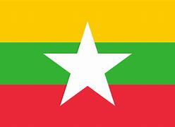

|  | Myanmar |
|---|---|
| Capital City | Naypyidaw |
| National Language | Burmese |
| Recipes | Recipes from Myanmar |
| Culture | The Culture from Myanmar |
| Attractions | Attractions for you when you visit Myanmar |
| Population | 53 Million People |
| Population per km² | 80,8 People |
| Area in km² | 676.590 km² |